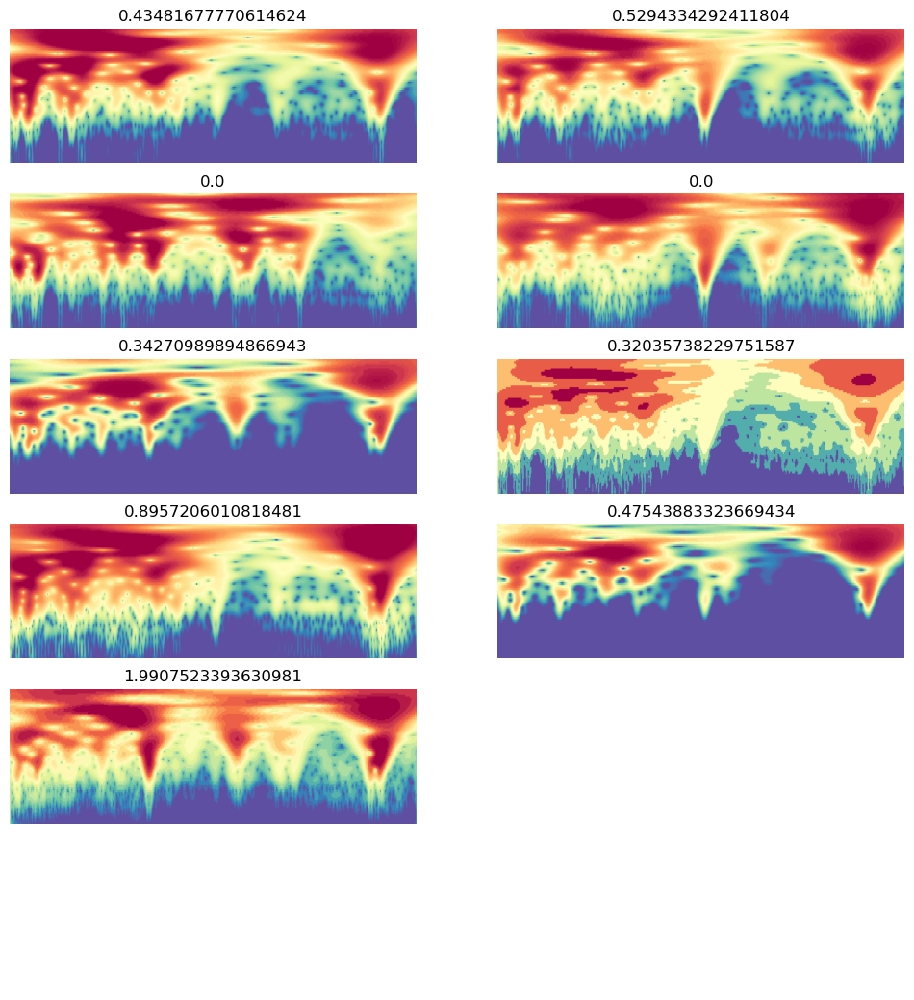

# setting up pod and pip install uhina
# accessing a pod terminal
# 1. To get access to the pod ip adress: runpodctl get pod -a
# 2. ssh into the pod: ssh root@<ip-address> -p 58871 -i ~/.ssh/id_ed25519
# runpodctl send uhina
# pip install -e '.[dev]'
# git clone https://github.com/franckalbinet/uhina.git
# pip install uhina
# runpodctl send im-bw
# runpodctl send ossl-tfm.csvFastai BW data augmentation
Experimenting with Fastai and BW data augmentation.
Runpod setup
Loading data
import pandas as pd
from pathlib import Path
import fastcore.all as fc
from fastai.data.all import *
from fastai.vision.all import *
from multiprocessing import cpu_count
from uhina.augment import Quantize
import warnings
warnings.filterwarnings('ignore')ossl_source = '../../_data/ossl-tfm/im-targets-lut.csv'
df = pd.read_csv(ossl_source); df.head()| fname | kex | |
|---|---|---|
| 0 | 3998362dd2659e2252cd7f38b43c9b1f.png | 0.182895 |
| 1 | 2bab4dbbac073b8648475ad50d40eb95.png | 0.082741 |
| 2 | 29213d2193232be8867d85dec463ec00.png | 0.089915 |
| 3 | 8b1ee9146c026faee20a40df86736864.png | 0.135030 |
| 4 | 6e8e9d1105e7da7055555cb5d310df5f.png | 0.270421 |
df['kex'].min(), df['kex'].max()(0.0, 3.6521352871126975)# start = np.random.uniform(1, 50); print(start)
# end = np.random.uniform(90.1, 99.5); print(end)
# steps = np.random.randint(5, 100); print(steps)
# percentiles = torch.linspace(start=start, end=end, steps=steps)
# percentilesfrom sklearn.model_selection import train_test_split
df_train, df_valid = train_test_split(df, test_size=0.1, random_state=41)
idx_train, idx_valid = df_train.index, df_valid.index
len(idx_train), len(idx_valid)(51906, 5768)def splitter(items): return [idx_train, idx_valid]OrderedRationclass OrderedQuantize(Quantize):
order = 0 # Apply first
class OrderedRatioResize(RatioResize):
order = 1 # Apply second
ossl = DataBlock(
blocks=(ImageBlock, RegressionBlock),
get_x=ColReader(0, pref='../../_data/ossl-tfm/im/'),
get_y=ColReader(1),
splitter=splitter,
item_tfms=[OrderedQuantize(n_valid=len(idx_valid))],
batch_tfms=[
OrderedRatioResize(224),
Normalize.from_stats(*imagenet_stats)
]
)ossl = DataBlock(blocks=(ImageBlock, RegressionBlock),
get_x=ColReader(0, pref='../../_data/ossl-tfm/im/'),
get_y=ColReader(1),
# batch_tfms=Normalize.from_stats(*imagenet_stats),
item_tfms=[Quantize(n_valid=len(idx_valid))],
batch_tfms=[RatioResize(224), ],
# splitter=RandomSplitter(valid_pct=0.1, seed=41)
splitter=splitter
# batch_tfms=aug_transforms()
)# ossl.summary(df)dls = ossl.dataloaders(df)dls.show_batch(nrows=6, ncols=2, figsize=(12, 13))
# Unfrozen, 30 epochs, 1.5e-3 => r2: 0.85
# Frozen,learn = vision_learner(dls, resnet18, pretrained=False, metrics=R2Score()).to_fp16()# learn = load_learner ('./models/bw-data-augment-0.pkl', cpu=True)learn.lr_find()
0.00% [0/1 00:00<?]
1.73% [14/811 00:45<42:44 4.8972]
--------------------------------------------------------------------------- KeyboardInterrupt Traceback (most recent call last) Cell In[88], line 1 ----> 1 learn.lr_find() File ~/mambaforge/envs/uhina/lib/python3.12/site-packages/fastai/callback/schedule.py:295, in lr_find(self, start_lr, end_lr, num_it, stop_div, show_plot, suggest_funcs) 293 n_epoch = num_it//len(self.dls.train) + 1 294 cb=LRFinder(start_lr=start_lr, end_lr=end_lr, num_it=num_it, stop_div=stop_div) --> 295 with self.no_logging(): self.fit(n_epoch, cbs=cb) 296 if suggest_funcs is not None: 297 lrs, losses = tensor(self.recorder.lrs[num_it//10:-5]), tensor(self.recorder.losses[num_it//10:-5]) File ~/mambaforge/envs/uhina/lib/python3.12/site-packages/fastai/learner.py:266, in Learner.fit(self, n_epoch, lr, wd, cbs, reset_opt, start_epoch) 264 self.opt.set_hypers(lr=self.lr if lr is None else lr) 265 self.n_epoch = n_epoch --> 266 self._with_events(self._do_fit, 'fit', CancelFitException, self._end_cleanup) File ~/mambaforge/envs/uhina/lib/python3.12/site-packages/fastai/learner.py:201, in Learner._with_events(self, f, event_type, ex, final) 200 def _with_events(self, f, event_type, ex, final=noop): --> 201 try: self(f'before_{event_type}'); f() 202 except ex: self(f'after_cancel_{event_type}') 203 self(f'after_{event_type}'); final() File ~/mambaforge/envs/uhina/lib/python3.12/site-packages/fastai/learner.py:255, in Learner._do_fit(self) 253 for epoch in range(self.n_epoch): 254 self.epoch=epoch --> 255 self._with_events(self._do_epoch, 'epoch', CancelEpochException) File ~/mambaforge/envs/uhina/lib/python3.12/site-packages/fastai/learner.py:201, in Learner._with_events(self, f, event_type, ex, final) 200 def _with_events(self, f, event_type, ex, final=noop): --> 201 try: self(f'before_{event_type}'); f() 202 except ex: self(f'after_cancel_{event_type}') 203 self(f'after_{event_type}'); final() File ~/mambaforge/envs/uhina/lib/python3.12/site-packages/fastai/learner.py:249, in Learner._do_epoch(self) 248 def _do_epoch(self): --> 249 self._do_epoch_train() 250 self._do_epoch_validate() File ~/mambaforge/envs/uhina/lib/python3.12/site-packages/fastai/learner.py:241, in Learner._do_epoch_train(self) 239 def _do_epoch_train(self): 240 self.dl = self.dls.train --> 241 self._with_events(self.all_batches, 'train', CancelTrainException) File ~/mambaforge/envs/uhina/lib/python3.12/site-packages/fastai/learner.py:201, in Learner._with_events(self, f, event_type, ex, final) 200 def _with_events(self, f, event_type, ex, final=noop): --> 201 try: self(f'before_{event_type}'); f() 202 except ex: self(f'after_cancel_{event_type}') 203 self(f'after_{event_type}'); final() File ~/mambaforge/envs/uhina/lib/python3.12/site-packages/fastai/learner.py:207, in Learner.all_batches(self) 205 def all_batches(self): 206 self.n_iter = len(self.dl) --> 207 for o in enumerate(self.dl): self.one_batch(*o) File ~/mambaforge/envs/uhina/lib/python3.12/site-packages/fastai/learner.py:237, in Learner.one_batch(self, i, b) 235 b = self._set_device(b) 236 self._split(b) --> 237 self._with_events(self._do_one_batch, 'batch', CancelBatchException) File ~/mambaforge/envs/uhina/lib/python3.12/site-packages/fastai/learner.py:203, in Learner._with_events(self, f, event_type, ex, final) 201 try: self(f'before_{event_type}'); f() 202 except ex: self(f'after_cancel_{event_type}') --> 203 self(f'after_{event_type}'); final() File ~/mambaforge/envs/uhina/lib/python3.12/site-packages/fastai/learner.py:174, in Learner.__call__(self, event_name) --> 174 def __call__(self, event_name): L(event_name).map(self._call_one) File ~/mambaforge/envs/uhina/lib/python3.12/site-packages/fastcore/foundation.py:159, in L.map(self, f, *args, **kwargs) --> 159 def map(self, f, *args, **kwargs): return self._new(map_ex(self, f, *args, gen=False, **kwargs)) File ~/mambaforge/envs/uhina/lib/python3.12/site-packages/fastcore/basics.py:899, in map_ex(iterable, f, gen, *args, **kwargs) 897 res = map(g, iterable) 898 if gen: return res --> 899 return list(res) File ~/mambaforge/envs/uhina/lib/python3.12/site-packages/fastcore/basics.py:884, in bind.__call__(self, *args, **kwargs) 882 if isinstance(v,_Arg): kwargs[k] = args.pop(v.i) 883 fargs = [args[x.i] if isinstance(x, _Arg) else x for x in self.pargs] + args[self.maxi+1:] --> 884 return self.func(*fargs, **kwargs) File ~/mambaforge/envs/uhina/lib/python3.12/site-packages/fastai/learner.py:178, in Learner._call_one(self, event_name) 176 def _call_one(self, event_name): 177 if not hasattr(event, event_name): raise Exception(f'missing {event_name}') --> 178 for cb in self.cbs.sorted('order'): cb(event_name) File ~/mambaforge/envs/uhina/lib/python3.12/site-packages/fastai/callback/core.py:62, in Callback.__call__(self, event_name) 60 res = None 61 if self.run and _run: ---> 62 try: res = getcallable(self, event_name)() 63 except (CancelBatchException, CancelBackwardException, CancelEpochException, CancelFitException, CancelStepException, CancelTrainException, CancelValidException): raise 64 except Exception as e: raise modify_exception(e, f'Exception occured in `{self.__class__.__name__}` when calling event `{event_name}`:\n\t{e.args[0]}', replace=True) File ~/mambaforge/envs/uhina/lib/python3.12/site-packages/fastai/learner.py:562, in Recorder.after_batch(self) 560 if len(self.yb) == 0: return 561 mets = self._train_mets if self.training else self._valid_mets --> 562 for met in mets: met.accumulate(self.learn) 563 if not self.training: return 564 self.lrs.append(self.opt.hypers[-1]['lr']) File ~/mambaforge/envs/uhina/lib/python3.12/site-packages/fastai/learner.py:511, in AvgSmoothLoss.accumulate(self, learn) 509 def accumulate(self, learn): 510 self.count += 1 --> 511 self.val = torch.lerp(to_detach(learn.loss.mean()), self.val, self.beta) File ~/mambaforge/envs/uhina/lib/python3.12/site-packages/fastai/torch_core.py:246, in to_detach(b, cpu, gather) 244 if gather: x = maybe_gather(x) 245 return x.cpu() if cpu else x --> 246 return apply(_inner, b, cpu=cpu, gather=gather) File ~/mambaforge/envs/uhina/lib/python3.12/site-packages/fastai/torch_core.py:226, in apply(func, x, *args, **kwargs) 224 if is_listy(x): return type(x)([apply(func, o, *args, **kwargs) for o in x]) 225 if isinstance(x,(dict,MutableMapping)): return {k: apply(func, v, *args, **kwargs) for k,v in x.items()} --> 226 res = func(x, *args, **kwargs) 227 return res if x is None else retain_type(res, x) File ~/mambaforge/envs/uhina/lib/python3.12/site-packages/fastai/torch_core.py:245, in to_detach.<locals>._inner(x, cpu, gather) 243 x = x.detach() 244 if gather: x = maybe_gather(x) --> 245 return x.cpu() if cpu else x File ~/mambaforge/envs/uhina/lib/python3.12/site-packages/fastai/torch_core.py:384, in TensorBase.__torch_function__(cls, func, types, args, kwargs) 382 if cls.debug and func.__name__ not in ('__str__','__repr__'): print(func, types, args, kwargs) 383 if _torch_handled(args, cls._opt, func): types = (torch.Tensor,) --> 384 res = super().__torch_function__(func, types, args, ifnone(kwargs, {})) 385 dict_objs = _find_args(args) if args else _find_args(list(kwargs.values())) 386 if issubclass(type(res),TensorBase) and dict_objs: res.set_meta(dict_objs[0],as_copy=True) File ~/mambaforge/envs/uhina/lib/python3.12/site-packages/torch/_tensor.py:1437, in Tensor.__torch_function__(cls, func, types, args, kwargs) 1434 return NotImplemented 1436 with _C.DisableTorchFunctionSubclass(): -> 1437 ret = func(*args, **kwargs) 1438 if func in get_default_nowrap_functions(): 1439 return ret KeyboardInterrupt:
# learn.fit_one_cycle(5, 3e-3)Evaluation
val_preds, val_targets = learn.get_preds(dl=dls.valid)val_preds_tta, val_targets_tta = learn.tta(dl=dls.valid)# EXAMPLE of TTA on single item
# from fastai.vision.all import *
# # Define your TTA transforms
# tta_tfms = [
# RandomResizedCrop(224, min_scale=0.5),
# Flip(),
# Rotate(degrees=(-15, 15)),
# Brightness(max_lighting=0.2),
# Contrast(max_lighting=0.2)
# ]
# # Create a pipeline of TTA transformations
# tta_pipeline = Pipeline(tta_tfms)
# # Load your model
# learn = load_learner('path/to/your/model.pkl')
# # Define the input data (e.g., an image)
# input_data = PILImage.create('path/to/your/image.jpg')
# # Apply TTA transforms to the input data and make predictions
# predictions = []
# for _ in range(5): # Apply 5 different augmentations
# augmented_data = tta_pipeline(input_data)
# prediction = learn.predict(augmented_data)
# predictions.append(prediction)
# # Average the predictions
# average_prediction = sum(predictions) / len(predictions)
# print(average_prediction)# Assuming you have a new CSV file for your test data
# test_source = '../../_data/ossl-tfm/ossl-tfm-test.csv'
# test_df = pd.read_csv(test_source)
# # Create a new DataLoader for the test data
# test_dl = learn.dls.test_dl(test_df)
# # Get predictions on the test set
# test_preds, test_targets = learn.get_preds(dl=test_dl)
# # Now you can use test_preds and test_targets for further analysis# Convert predictions and targets to numpy arrays
def assess_model(val_preds, val_targets):
val_preds = val_preds.numpy().flatten()
val_targets = val_targets.numpy()
# Create a DataFrame with the results
results_df = pd.DataFrame({
'Predicted': val_preds,
'Actual': val_targets
})
# Display the first few rows of the results
print(results_df.head())
# Calculate and print the R2 score
from sklearn.metrics import r2_score
r2 = r2_score(val_targets, val_preds)
print(f"R2 Score on validation set: {r2:.4f}")assess_model(val_preds, val_targets) Predicted Actual
0 0.312483 0.000000
1 0.126990 0.184960
2 0.365726 0.194201
3 0.239089 0.262364
4 0.402980 0.355799
R2 Score on validation set: 0.8325assess_model(val_preds_tta, val_targets_tta) Predicted Actual
0 0.246857 0.000000
1 0.148590 0.184960
2 0.371643 0.194201
3 0.226535 0.262364
4 0.407333 0.355799
R2 Score on validation set: 0.8378val_preds_np = val_preds
val_targets_np = val_targets
# Apply the transformation: exp(y) - 1
val_preds_transformed = np.exp(val_preds_np) - 1
val_targets_transformed = np.exp(val_targets_np) - 1
# Create a DataFrame with the results
results_df = pd.DataFrame({
'Predicted': val_preds_transformed,
'Actual': val_targets_transformed
})
# Display the first few rows of the results
print(results_df.head())
# Calculate and print the R2 score
from sklearn.metrics import r2_score
r2 = r2_score(val_targets_transformed, val_preds_transformed)
print(f"R2 Score on validation set (after transformation): {r2:.4f}")
# Calculate and print the MAPE, handling zero values
def mean_absolute_percentage_error(y_true, y_pred):
non_zero = (y_true != 0)
return np.mean(np.abs((y_true[non_zero] - y_pred[non_zero]) / y_true[non_zero])) * 100
mape = mean_absolute_percentage_error(val_targets_transformed, val_preds_transformed)
print(f"Mean Absolute Percentage Error (MAPE) on validation set: {mape:.2f}%")
# Calculate and print the MAE as an alternative metric
from sklearn.metrics import mean_absolute_error
mae = mean_absolute_error(val_targets_transformed, val_preds_transformed)
print(f"Mean Absolute Error (MAE) on validation set: {mae:.4f}") Predicted Actual
0 0.366814 0.00000
1 0.135405 0.20317
2 0.441560 0.21434
3 0.270092 0.30000
4 0.496277 0.42732
R2 Score on validation set (after transformation): 0.6936
Mean Absolute Percentage Error (MAPE) on validation set: 50.72%
Mean Absolute Error (MAE) on validation set: 0.1956plt.figure(figsize=(6, 6))
# Use logarithmic bins for the colormap
h = plt.hexbin(val_targets, val_preds, gridsize=65,
bins='log', cmap='Spectral_r', mincnt=1,
alpha=0.9)
# Get the actual min and max counts from the hexbin data
counts = h.get_array()
min_count = counts[counts > 0].min() # Minimum non-zero count
max_count = counts.max()
# Create a logarithmic colorbar
cb = plt.colorbar(h, label='Count in bin', shrink=0.73)
tick_locations = np.logspace(np.log10(min_count), np.log10(max_count), 5)
cb.set_ticks(tick_locations)
cb.set_ticklabels([f'{int(x)}' for x in tick_locations])
# Add the diagonal line
min_val = min(val_targets.min(), val_preds.min())
max_val = max(val_targets.max(), val_preds.max())
plt.plot([min_val, max_val], [min_val, max_val], 'k--', lw=1)
# Set labels and title
plt.xlabel('Actual Values')
plt.ylabel('Predicted Values')
plt.title('Predicted vs Actual Values (Hexbin with Log Scale)')
# Add grid lines
plt.grid(True, linestyle='--', alpha=0.65)
# Set the same limits for both axes
plt.xlim(min_val, max_val)
plt.ylim(min_val, max_val)
# Make the plot square
plt.gca().set_aspect('equal', adjustable='box')
plt.tight_layout()
plt.show()
# Print the range of counts in the hexbins
print(f"Min non-zero count in hexbins: {min_count}")
print(f"Max count in hexbins: {max_count}")
Min non-zero count in hexbins: 1.0
Max count in hexbins: 157.0path_model = Path('./models')
learn.export(path_model / '0.pkl')Inference
ossl_source = Path('../../_data/ossl-tfm/img')
learn.predict(ossl_source / '0a0a0c647671fd3030cc13ba5432eb88.png')((0.5229991674423218,), tensor([0.5230]), tensor([0.5230]))df[df['fname'] == '0a0a0c647671fd3030cc13ba5432eb88.png']| fname | kex | |
|---|---|---|
| 28867 | 0a0a0c647671fd3030cc13ba5432eb88.png | 0.525379 |
np.exp(3) - 119.085536923187668Experiments:
Color scale: viridis | Discretization: percentiles = [i for i in range(60, 100)]
| Model | Image Size | Learning Rate | Epochs | R2 Score | Time per Epoch | Finetuning | with axis ticks |
|---|---|---|---|---|---|---|---|
| ResNet-18 | 100 | 1e-3 | 10 | 0.648 | 05:12 | No | Yes |
| ResNet-18 | 224 | 2e-3 | 10 | 0.69 | 07:30 | No | Yes |
| ResNet-18 | 750 (original size) | 1e-3 | 10 | 0.71 | 36:00 | No | Yes |
| ResNet-18 | 224 | 2e-3 | 20 | 0.704 | 07:30 | No | Yes |
| ResNet-18 | 224 | 2e-3 | 10 | 0.71 | 07:00 | No | No |
Discretization: percentiles = [i for i in range(20, 100)]
| Model | Image Size | Learning Rate | Epochs | R2 Score | Time per Epoch | Finetuning | with axis ticks | colour scale |
|---|---|---|---|---|---|---|---|---|
| ResNet-18 | 224 | 2e-3 | 10 | 0.7 | 05:12 | No | No | viridis |
| ResNet-18 | 224 | 3e-3 | 10 | 0.71 | 05:12 | No | No | jet |
From now on with axis ticks is always No.
Discretization: esimated on 10000 cwt power percentiles [20, 30, 40, 50, 60, 70, 80, 90, 95, 97, 99]
| Model | Image Size | Learning Rate | Epochs | R2 Score | Time per Epoch | Finetuning | remark | colour scale |
|---|---|---|---|---|---|---|---|---|
| ResNet-18 | 224 | 2e-3 | 10 | 0.71 | 05:12 | No | None | jet |
| ResNet-18 | 224 | 2e-3 | 10 | 0.685 | 05:12 | No | y range added | jet |
From now on random splitter with 10% validation and random seed 41.
Discretization: esimated on 10000 cwt power percentiles [20, 30, 40, 50, 60, 70, 80, 90, 95, 97, 99]
| Model | Image Size | Learning Rate | Epochs | R2 Score | Time per Epoch | Finetuning | remark | colour scale |
|---|---|---|---|---|---|---|---|---|
| ResNet-18 | 224 | 2e-3 | 10 | 0.7 | 05:12 | No | Pre-train & normalize: True | jet |
| ResNet-18 | 224 | 2e-3 | 10 | 0.796 | 08:12 | No | No Pre-train | jet |
| ResNet-18 | 224 | 3e-3 | 10 | 0.7 | 05:12 | No | Pre-train & normalize: False | jet |
| ResNet-18 (id=0) | 224 | 2e-3 | 20 | 0.829 | 08:12 | No | No Pre-train (try 18 epochs) | jet |